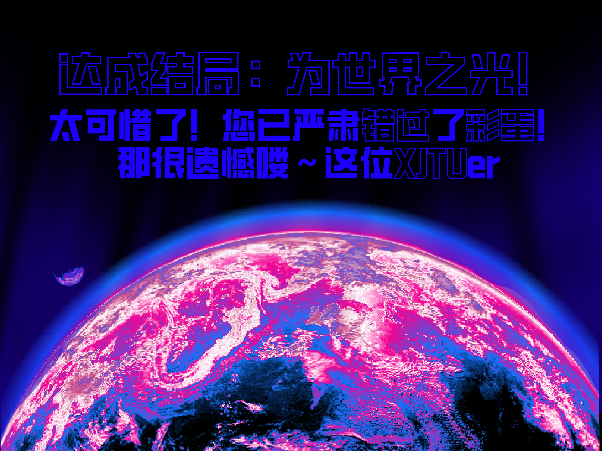
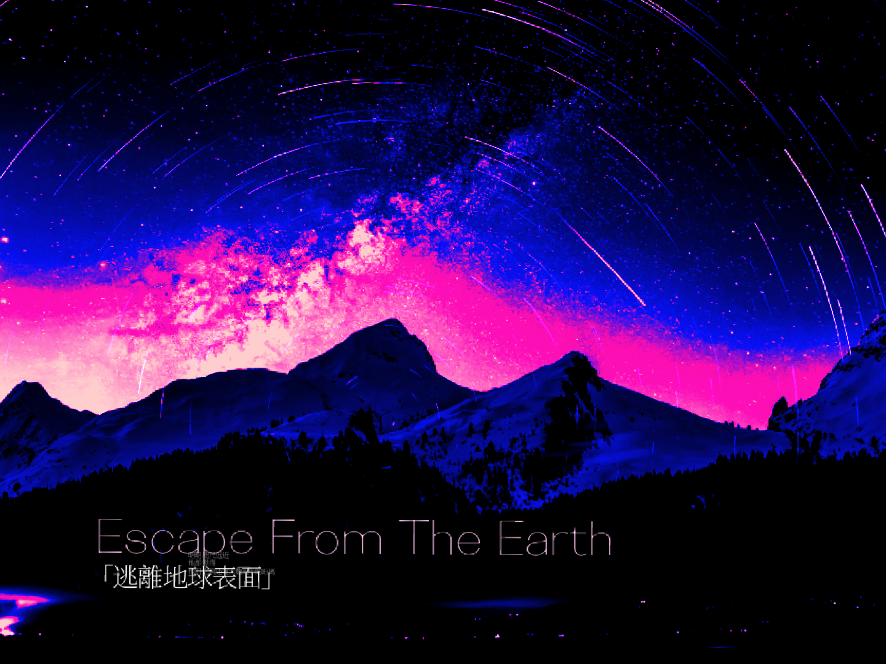
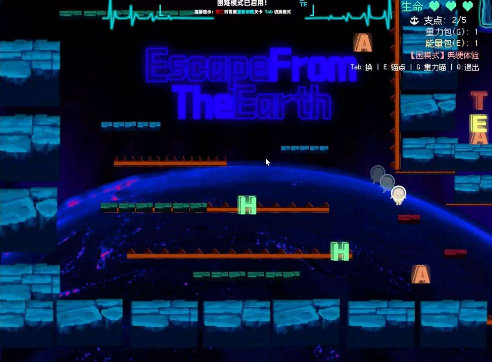
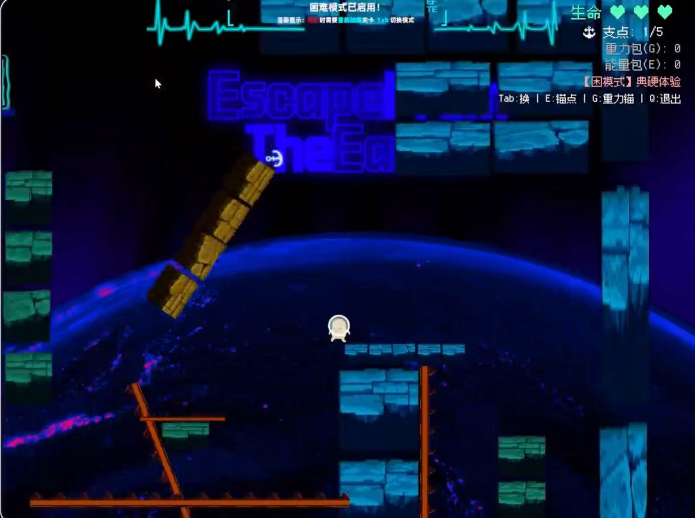
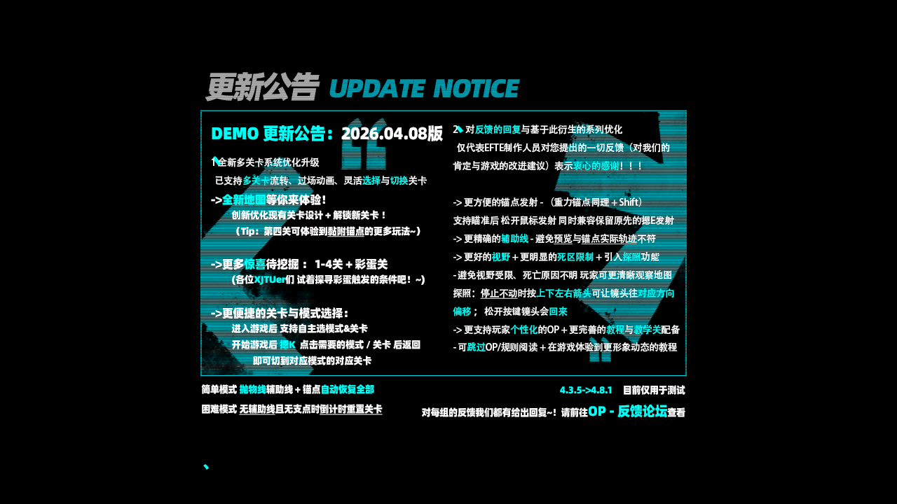

Developers
Mengcheng Shi（石梦成）from XJTU
Wanchen Li（李宛辰）from XJTU
SiYu Zhu（朱思宇） from XJTU
Di Wu（吴迪）from XJTU
Escape From The Earth (逃离地球表面)
Stranded on a strange and perilous planet called "Earth," one little alien has only one mission: get back to the UFO! This is an innovative 2D puzzle-platformer that throws traditional jumping out the window, replacing it with a mind-bending spatial mechanic.
Your ultimate survival tool? The Anchor-Symmetric Teleportation system! Players must skillfully throw an anchor point into the environment and instantly teleport to its exact point reflection (centrally symmetric position). This revolutionary core mechanic turns every gap, wall, and obstacle into a thrilling geometric puzzle.
Calculate your angles, watch your surroundings, and master the art of symmetric jumping to bypass tricky terrains. Do you have the spatial awareness to fling your anchor, outsmart Earth's obstacles, and vault your way back to the stars? The countdown to liftoff has begun!
滞留在一颗名为“地球”的陌生星球上，我们的小外星人只有一个终极任务：回到UFO！这是一款极具创新的2D解谜平台游戏，它彻底抛弃了传统的跳跃方式，取而代之的是一种极其烧脑的空间机制。
你唯一的生存利器？锚点中心对称传送系统！玩家需要巧妙地将锚点投掷到环境中，并瞬间传送到以锚点为中心的中心对称位置。这一核心机制将游戏中的每一个沟壑、高墙和障碍物都变成了一场激动人心的几何解谜。
精确计算角度，观察周围环境，掌握对称传送的艺术来跨越各种棘手地形。你是否具备足够的空间想象力来投掷锚点，智取地球上的重重障碍，并一路跃向星空？升空的倒计时已经开始！
Credits / 素材鸣谢
Game Pitch
Click to Play
Download Game EXE (Google Drive)
Download Game EXE (Baidu Netdisk)
(提取码: 94yd)





